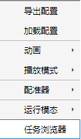
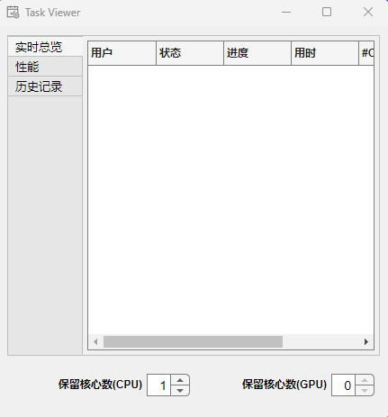
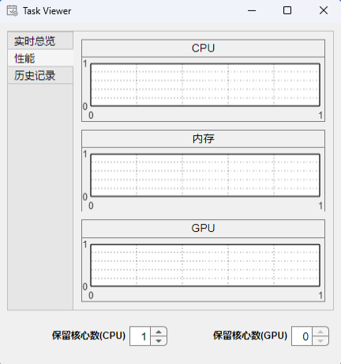
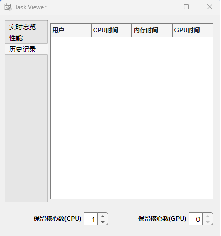
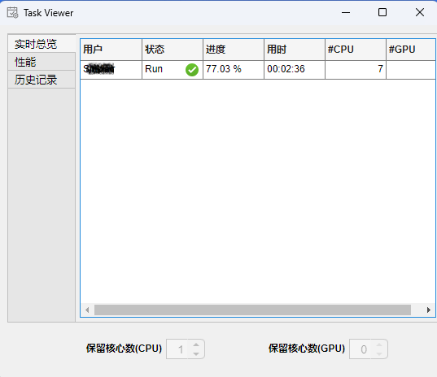
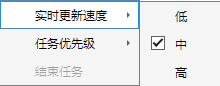

1.3.7 任务浏览器

通过选项->任务浏览器打开浏览器子窗口，如下图：
  
任务浏览器将显示当前正在执行的配准任务，如下图：

如果当前用户正在执行配准任务，保留核心数 将处于锁定状态，直至任务结束。如果需要，请在 配准任务开始前 设置该数值以保护部分计算资源，这样您的操作系统可以继续与Reg3D无关的其他任务。
实时总览：将显示当前计算机中所有正在运行的Reg3D的资源使用情况，包括 用户, 状态, 进度, 用时, #CPU 与 #GPU。其中#CPU与#GPU由分布式资源调度器自动控制。
性能：
历史记录：
注1：您可以在实时总览界面使用右键菜单，如下图：

值得注意的是，当前计算机管理员具有高于分布式资源调度器的权限，您可以手动控制正在执行的任意任务的优先级或结束任务( Reg3D Version ≥ 2.2.0 )。